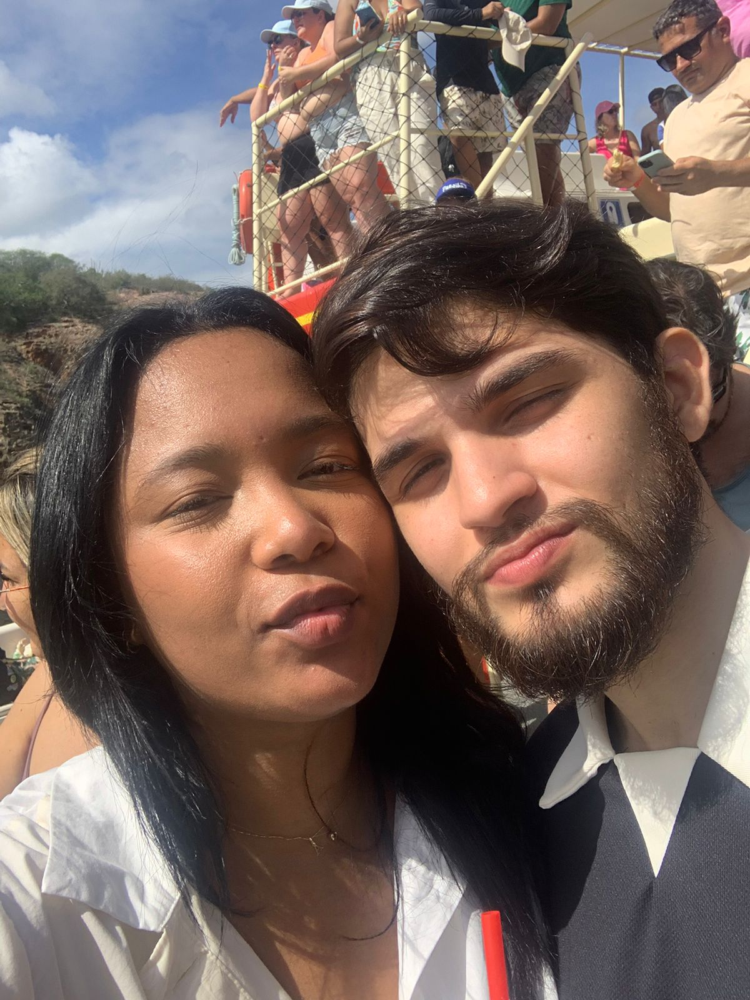
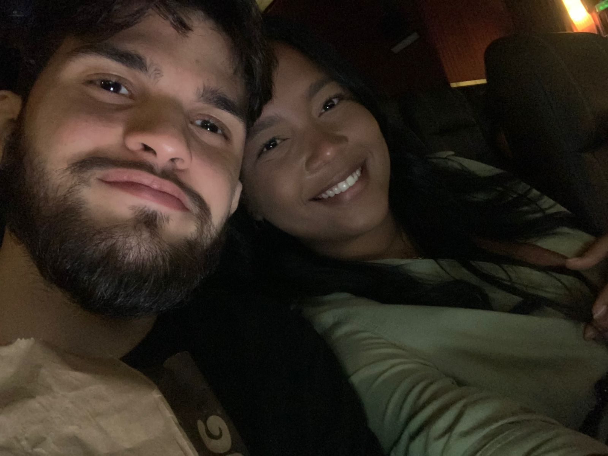
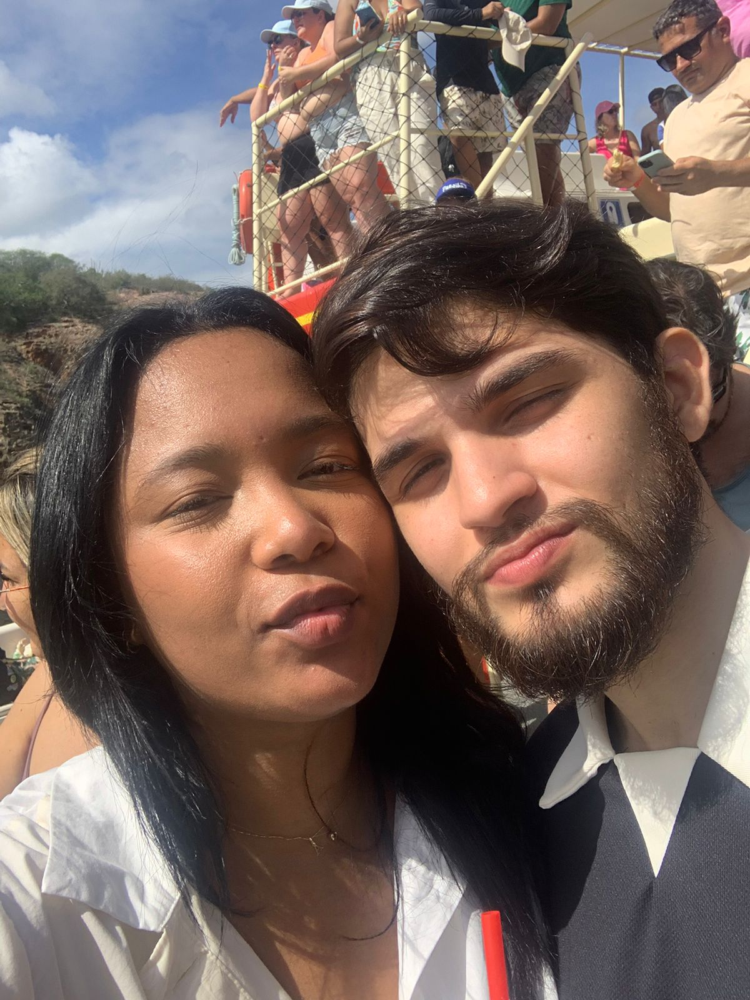
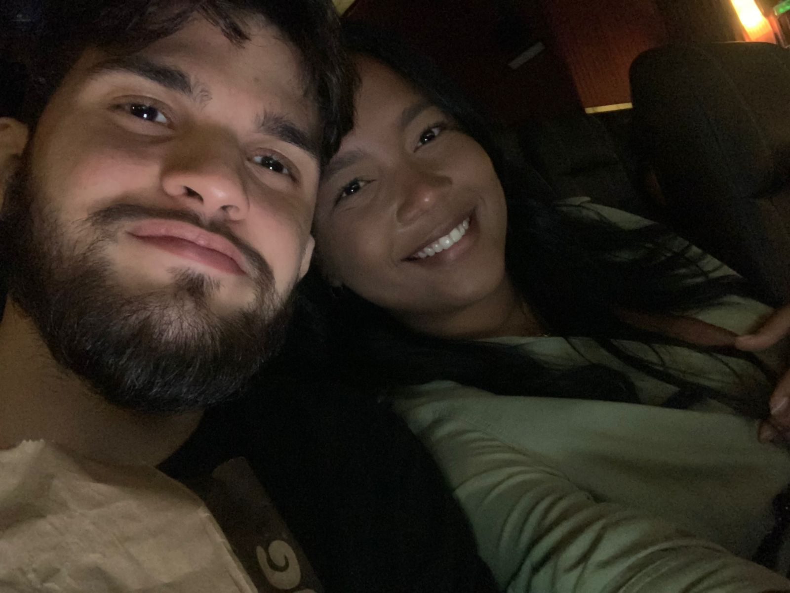

Quando te conheci, eu era uma pessoa muito triste. Estava perdido, sem ter um norte, sem saber qual rumo seguir. Aquela pessoa sem expectativa para o futuro. E te conhecer foi o início da minha evolução.
Logo que começamos a trocar mensagens, percebi o quão especial você era. Seu jeito brincalhona, seu sorriso espontâneo e seu carisma logo me conquistou e cada dia que passava, falar com você sempre era a melhor parte do meu dia. E não demorou muito até eu querer muito te conhecer pessoalmente, ver de perto quem era essa pessoa que eu amava bastante.
Nosso primeiro encontro, apesar de tão rápido e inesperado, foi o melhor se não o maior acerto da minha vida, kkkk. "Só Deus sabe quando íamos nos ver se não fosse aquele dia". Quando te vi lá, sentada no shopping, minha primeira impressão foi: "Nossa, que mulher perfeita. Que morena linda. Estorei no norte, kkk!" Mesmo com toda minha timidez, a conversa com você fluiu tão naturalmente que parecia que já tínhamos nos encontrado várias vezes ” talvez em outra vida ”.
E dito e certo: depois daquilo, eu só queria te ver mais e mais. Começamos a nos encontrar com mais frequência. Teve nosso encontro no parque , “o do nosso primeiro beijo”. E mesmo você dizendo que o beijo foi 4/10 (kkkkk), foi ali que acho que decidimos, sem falar, que íamos continuar nos vendo. “Eu até troquei de faculdade só pra poder ficar mais perto de você.”
Apesar de tudo que você diz sobre “tratar ficante como ficante”, você sempre se importou muito comigo. E eu sempre fui bobo por você e cada vez mais bobo. Me apaixonei de verdade. E lembro até hoje do dia em que te pedi em namoro: nunca fiquei tão nervoso na minha vida. Tanta coisa que eu queria dizer e no fim... mal consegui falar uma frase sem gaguejar, kkkkkk.
Bom, foi aí que minha vida decolou. Você me mudou por completo. Amadureci no meu jeito de agir e pensar. E você sabe o quanto eu errei até conseguir acertar. É verdade o que dizem: a mulher certa transforma o homem. (Mas também não se ache kkkk).
Levar a vida com você sempre foi fácil, leve e despretensiosa. E tenho certeza que te pedir em noivado no mesmo parque onde nos conhecemos, depois de tantas pessoas nos abençoando que realmente foi a melhor decisão da minha vida. Porque, sinceramente, não quero nada mais do que construir uma família ao seu lado.
Você é a mulher da minha vida, minha melhor amiga, minha parceira, minha companheira. E eu não poderia estar mais feliz por ter você ao meu lado.